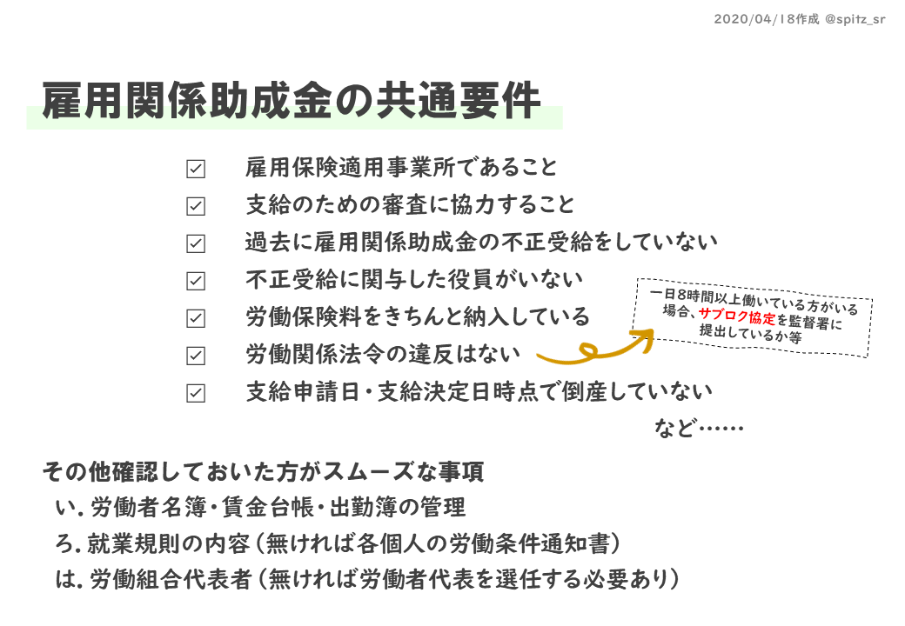

休業手当とは
労働基準法に基づいて、使用者（事業主）が労働者に支払う手当の名称です。 よく休業補償と混同されることがありますが、休業補償が労働中の災害による償いの生活保障であるのに対し 休業手当は、使用者側の事由によって労働者に休業させた場合に支払が必要となります。
-
休業手当と休業補償は別物
-
使用者側の事由は幅広い
-
休業手当の単価は平均賃金の６０％以上
-
休業手当は所得税の課税対象
雇用調整助成金とは
厚生労働省が管掌しており、要件を満たせば受け取れる給付金です。 以下が給付までの流れですが 事業主にとっては先に休業手当を支出し、数か月後に受け取れる 後払いの給付金であることにご留意ください。
-
事業主が計画作成・提出
-
事業主が休業手当を支払
-
期間が終了次第助成金の申請
-
労働局より助成金の給付

-
雇用保険料その他労働保険料や税金等を納めていること
-
提出した計画に基づいて休業を行い、休業手当を支払っていること
-
休業手当を支払った被保険者が６か月以上被保険であること
-
生産性指標要件を満たしていること
-
前回受給したとき、期間最終日の翌日から一年以上経過していること
社会情勢により、要件が緩和・変更となる場合もあります。 4月11日時点で生産指標要件・被保険者の期間要件等について特例措置がとられています。 申請を検討の際は下記ボタンから厚生労働省の雇用調整助成金ページを必ずご確認ください。
雇用保険基本手当給付日数判定
よく失業手当と言われるのが求職者給付の基本手当です。雇用保険に加入していた方が離職し、 求職活動をしている場合に雇用保険の加入期間や年齢によって受給できる場合があります。 日額については、離職前6か月間の賃金を180で割った金額に45～80％された額になります。 年齢による上限額などもあるので日額の詳細は下記ボタンからご確認ください。 ここではちょっと複雑な基本手当の所定給付日数を判定します。